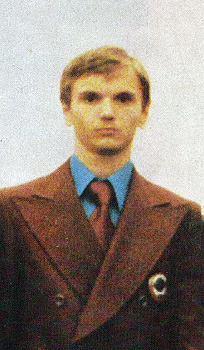

Gennady Krysin (USSR)
1978 World HB Bronze Medalist

Medal Total
Olympic Games: 1
Silver
World Championships: 1 Silver, 1 Bronze
Gennady was born in 1957 and trained in Moscow at Burevestnik. He was one of the first gymnasts to dismount the high bar with a triple back somersault.
Competition Results
1975
Jr. GDR-USSR Dual Meet: 1st Team, 3rd AA, 3rd FX, 3rd PH, 3rd PB
Jr. Friendship Tournament (Druzhba): 1st Team, 3rd AA, 1st FX, 1st PB, 1st
HB, 4th R, 5th V
Jr. USSR Championships: 6th AA, 1st FX, 1st HB
Moscow News: 8th AA
USSR-ROM Dual Meet: 1st Team, 2nd AA
1976
Olympic Games: 2nd Team, 8th AA (prelims), 5th HB
USSR Championships: 2nd HB
USSR Cup: 5th AA, 3rd HB, 4th PH, 5th FX
1977
Moscow News: 4th AA, 2nd PB, 3rd FX
Paris Grand Prix: 1st AA, 1st V, 1st PB, 1st HB
USSR Cup: 6th AA, 1st PH, 1st HB, 3rd FX, 6th PB
1978
Moscow News: 1st AA, 1st FX, 1st PH, 1st PB, 1st HB, 3rd V
USSR Championships: 4th AA
USSR Cup: 4th AA, 1st HB, 5th FX, 5th V, 6th PH
World Championships: 2nd Team, 18th AA, 3rd HB
1979
Istanbul International: 1st AA
This page was created on November
05, 2006 and was last updated on August 23, 2007.
© Gymn Forum